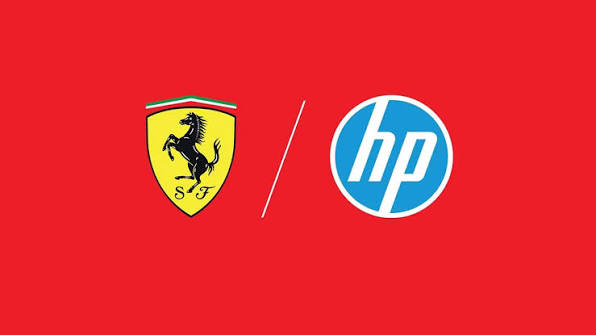

El nacimiento de Scuderia Ferrari
Scuderia Ferrari fue fundada por Enzo Ferrari en 1929 en la ciudad de Módena, Italia. En sus primeros años, el equipo se dedicó principalmente a competir con vehículos de Alfa Romeo, antes de convertirse posteriormente en fabricante y constructor independiente.
Ferrari en la Fórmula 1
Ferrari es la única escudería que ha participado en todas las temporadas del Campeonato Mundial de Fórmula 1 desde su creación en 1950. Desde entonces, el equipo italiano se convirtió en uno de los principales protagonistas de la historia de la categoría.
Los primeros campeonatos
El primer Campeonato Mundial de Pilotos de Ferrari llegó en 1952 con Alberto Ascari. El piloto italiano volvió a ganar el campeonato en 1953, consolidando a Ferrari como una de las grandes fuerzas de la Fórmula 1 durante los primeros años del campeonato.
La época de Michael Schumacher
Uno de los períodos más exitosos de Ferrari comenzó a finales de la década de 1990 con la llegada de Michael Schumacher. El piloto alemán se convirtió en la figura principal de un proyecto que también contó con importantes ingenieros, técnicos y miembros del equipo.
Entre 2000 y 2004, Schumacher consiguió cinco Campeonatos Mundiales de Pilotos consecutivos con Ferrari. Durante ese mismo período, Ferrari dominó el Campeonato de Constructores y consiguió varios títulos consecutivos.
El dominio de Ferrari
La etapa comprendida entre finales de los años noventa y mediados de los 2000 es considerada una de las épocas doradas de Ferrari. El equipo logró combinar un monoplaza competitivo, una estrategia eficiente y un grupo de trabajo muy sólido.
La combinación de Michael Schumacher, Rubens Barrichello, Jean Todt, Ross Brawn y Rory Byrne fue fundamental para construir una de las estructuras más dominantes que ha tenido la Fórmula 1.
La era de Fernando Alonso
En 2010, Fernando Alonso llegó a Ferrari procedente de Renault. Durante su etapa con la escudería italiana consiguió importantes victorias y estuvo cerca de conseguir el Campeonato Mundial de Pilotos en varias ocasiones.
Alonso terminó como subcampeón del mundo en 2010, 2012 y 2013. En 2012, especialmente, Ferrari y Alonso estuvieron muy cerca de conseguir el título después de una intensa lucha durante toda la temporada.
La llegada de Sebastian Vettel
En 2015, Sebastian Vettel se convirtió en piloto de Ferrari. El piloto alemán consiguió varias victorias y podios durante sus años con el equipo y fue uno de los principales contendientes al campeonato en 2017 y 2018.
Charles Leclerc y la nueva generación
Charles Leclerc llegó a Ferrari en 2019 y rápidamente se convirtió en una de las principales figuras del equipo. El piloto monegasco consiguió varias victorias y poles, demostrando una gran velocidad durante las sesiones de clasificación.
Leclerc pasó a formar una de las parejas más importantes de Ferrari junto a Carlos Sainz, quien llegó al equipo en 2021. Ambos pilotos ayudaron a Ferrari a recuperar competitividad después de varias temporadas difíciles.
La llegada de Lewis Hamilton
Para la temporada 2025, Ferrari incorporó a Lewis Hamilton, siete veces campeón mundial. Su llegada representó uno de los movimientos más importantes de la historia reciente de la Fórmula 1 y aumentó las expectativas sobre el futuro de la escudería italiana.
Hamilton pasó a compartir equipo con Charles Leclerc, formando una alineación con una gran experiencia y velocidad. La incorporación del piloto británico también reforzó las aspiraciones de Ferrari de volver a luchar por títulos.
El legado de Ferrari
Ferrari es actualmente la escudería con más Campeonatos de Constructores en la historia de la Fórmula 1, con 16 títulos. Además, cuenta con 15 Campeonatos de Pilotos obtenidos por diferentes generaciones de pilotos.
Más allá de sus títulos, Ferrari se ha convertido en uno de los símbolos más importantes del automovilismo mundial. Su color rojo, conocido como "Rosso Corsa", y el famoso caballo rampante son elementos reconocidos por aficionados de todo el mundo.
Ferrari en la actualidad
Ferrari continúa compitiendo en la Fórmula 1 con el objetivo de recuperar el Campeonato Mundial de Pilotos y volver a conquistar el Campeonato de Constructores. La escudería mantiene una gran inversión en tecnología, desarrollo aerodinámico y preparación de sus monoplazas.
Con Charles Leclerc y Lewis Hamilton como pilotos, Ferrari afronta una nueva etapa de su historia intentando recuperar el dominio que tuvo durante algunos de sus períodos más exitosos.